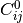
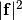

This module encapsulates all the interatomic potentials implemented in QUIP
A Potential object represents an interatomic potential, a tight binding model or an interface to an external code used to perform calculations. It is initialised from an args_str describing the type of potential, and an XML formatted string param_str giving the parameters.
Types of Potential:
args_str prefix Description IP Interatomic Potential TB Tight Binding Model FilePot File potential, used to communicate with external program CallbackPot Callback potential, computation done by Python function Sum Sum of two other potentials ForceMixing Combination of forces from two other potentials
Types of interatomic potential available:
args_str prefix Description IP BOP Bond order potential for metals IP BornMayer Born-Mayer potential for oxides (e.g. BKS potential for silica) IP Brenner Brenner (1990) potential for carbon IP Brenner_2002 Brenner (2002) reactive potential for carbon IP Brenner_Screened Interface to Pastewka et al. screened Brenner reactive potential for carbon IP Coulomb Coulomb interaction: support direct summation, Ewald and damped shifted force Coulomb potential IP Einstein Einstein crystal potential IP EAM_ErcolAd Embedded atom potential of Ercolessi and Adams IP FB Flikkema and Bromley potential IP FS Finnis-Sinclair potential for metals IP FX Wrapper around ttm3f water potential of Fanourgakis-Xantheas IP GAP Gaussian approximation potential IP Glue Generic implementation of glue potential IP HFdimer Simple interatomic potential for an HF dimer, from MP2 calculations IP KIM Interface to KIM, the Knowledgebase of Interatomic potential Models (www.openkim.org) IP LJ Lennard-Jones potential IP Morse Morse potential IP PartridgeSchwenke Partridge-Schwenke model for a water monomer IP SW Stillinger-Weber potential for silicon IP SW_VP Combined Stillinger-Weber and Vashista potential for Si and SiO2. IP Si_MEAM Silicon modified embedded attom potential IP Sutton_Chen Sutton-Chen potential IP TS Tangney-Scandolo polarisable potential for oxides IP Tersoff Tersoff potential for silicon IP WaterDimer_Gillan 2-body potential for water dimer
Types of tight binding potential available:
args_str prefix Description TB Bowler Bowler tight binding model TB DFTB Density functional tight binding TB GSP Goodwin-Skinner-Pettifor tight binding model TB NRL_TB Naval Research Laboratory tight binding model
Examples of the XML parameters for each of these potential can be found in the QUIP_Core/parameters directory of the QUIP svn repository.
Module contents for quippy.potential:
Classes
| Potential(init_args[, pot1, pot2, param_str, ...) | Provides interface to all energy/force/virial calculating schemes, including actual calculations, as well as abstract hybrid schemes such as LOTF, Force Mixing, ONIOM, and the local energy scheme. |
| Minim(atoms[, restart, relax_positions, ...]) | Minimise forces and/or virial tensor components wrt atomic positions and/or cell. |
| ForceMixingPotential(pot1, pot2[, ...]) | Subclass of Potential for mixing forces from two Potentials |
Functions
| constrain_virial_post(at,virial) |
|
||
| energy_func(x,[am_data]) |
|
||
| gradient_func(x,[am_data]) |
|
||
| pack_pos_dg(x2d,dg2d,lat_factor,n2) |
|
||
| unpack_pos_dg(xx,at_n,at_pos,dg,lat_factor) |
|
||
| print_hook(x,dx,e,[do_print,am_data]) |
|
||
| max_rij_change(last_connect_x,x,r_cut,lat_factor) |
|
||
| force_test(at, p[, dx]) | Compare analyric and numeric forces for the Potential p with Atoms at |
Bases: quippy._potential.Potential
Provides interface to all energy/force/virial calculating schemes, including actual calculations, as well as abstract hybrid schemes such as LOTF, Force Mixing, ONIOM, and the local energy scheme.
Typically a Potential is constructed from an initialisation args_str and an XML parameter file, e.g. in Fortran:
type(InOutput) :: xml_file
type(Potential) :: pot
...
call initialise(xml_file, 'SW.xml', INPUT)
call initialise(pot, 'IP SW', param_file=xml_file)
Or, equivaently in Python:
pot = Potential('IP SW', param_filename='SW.xml')
creates a Stillinger-Weber potential using the parameters from the file SW.xml. The XML parameters can also be given directly as a string, via the param_str argument.
The main workhorse is the calc() routine, which is used internally to perform all calculations, e.g. to calculate forces:
type(Atoms) :: at
real(dp) :: force(3,8)
...
call diamond(at, 5.44, 14)
call randomise(at%pos, 0.01)
call set_cutoff(at, cutoff(pot))
call calc_connect(at)
call calc(pot, at, force=force)
Note how the Atoms.cutoff attribute is set to the cutoff of this Potential, and then the neighbour lists are built with the calc_connect() routine.
A Potential can be used to optimise the geometry of an Atoms structure, using the minim() routine, (or, in Python, via the Minim wrapper class).
args_str options
| Name | Type | Default | Comments |
|---|---|---|---|
| minimise_bulk | bool | False | If true, minimise bulk_scale structure before measuring eqm. volume and bulk modulus for rescaling |
| target_B | float | 0.0 | Target bulk modulus used if do_rescale_E=T. Unit is GPa. |
| target_vol | float | 0.0 | Target volume per cell used if do_rescale_r=T Unit is A^3. |
Wrapper around Fortran interface __init__ containing multiple routines:
- initialise([args_str, pot1, pot2, param_str, bulk_scale, mpi_obj, error])¶
Parameters:
- args_str (input string(len=-1), optional) – Valid arguments are Sum, ForceMixing, EVB, Local_E_Mix and ONIOM, and any type of simple_potential
- pot1 (Potential object, optional) – Optional first Potential upon which this Potential is based
- pot2 (Potential object, optional) – Optional second potential
- param_str (input string(len=-1), optional) – contents of xml parameter file for potential initializers, if needed
- bulk_scale (Atoms object, optional) – optional bulk structure for calculating space and E rescaling
- mpi_obj (MPI_context object, optional) –
- error (in/output rank-0 array(int,’i’), optional) –
Routine is wrapper around Fortran routine potential_initialise defined in file QUIP_Core/Potential.f95.
- initialise(args_str, io_obj[, bulk_scale, mpi_obj, error])
Parameters:
- args_str (input string(len=-1)) – Valid arguments are Sum, ForceMixing, EVB, Local_E_Mix and ONIOM, and any type of simple_potential
- io_obj (InOutput object) – name of xml parameter inoutput for potential initializers
- bulk_scale (Atoms object, optional) – optional bulk structure for calculating space and E rescaling
- mpi_obj (MPI_context object, optional) –
- error (in/output rank-0 array(int,’i’), optional) –
Routine is wrapper around Fortran routine potential_initialise_inoutput defined in file QUIP_Core/Potential.f95.
The Potential class also implements the ASE ase.calculators.interface.Calculator interface via the the get_forces(), get_stress(), get_stresses(), get_potential_energy(), get_potential_energies() methods. This simplifies calculation since there is no need to set the cutoff or to call calc_connect(), as this is done internally. The example above reduces to:
atoms = diamond(5.44, 14)
atoms.rattle(0.01)
atoms.set_calculator(pot)
forces = atoms.get_forces()
print forces
Note that the ASE force array is the transpose of the QUIP force array, so has shape (len(atoms), 3) rather than (3, len(atoms)).
The optional arguments pot1, pot2 and bulk_scale are used by Sum and ForceMixing potentials (see also wrapper class ForceMixingPotential)
An quippy.mpi_context.MPI_context object can be passed as the mpi_obj argument to restrict the parallelisation of this potential to a subset of the
The callback argument is used to implement the calculation of the Potential in a Python function: see set_callback() for an example.
In addition to the builtin QUIP potentials, it is possible to use any ASE calculator as a QUIP potential by passing it as the calculator argument to the Potential constructor, e.g.:
from ase.calculators.morse import MorsePotential
pot = Potential(calculator=MorsePotential)
cutoff_skin is used to set the cutoff_skin attribute.
atoms if given, is used to set the calculator associated with atoms to the new Potential instance, by calling :meth:’.Atoms.set_calculator`.
Note
QUIP potentials do not compute stress and per-atom stresses
directly, but rather the virial tensor which has units of stress
 volume, i.e. energy. If the total stress is
requested, it is computed by dividing the virial by the atomic
volume, obtained by calling Atoms.get_volume(). If per-atom
stresses are requested, a per-atom volume is needed. By default
this is taken to be the total volume divided by the number of
atoms. In some cases, e.g. for systems containing large amounts of
vacuum, this is not reasonable. The vol_per_atom calc_arg can
be used either to give a single per-atom volume, or the name of an
array in Atoms.arrays containing volumes for each atom.
volume, i.e. energy. If the total stress is
requested, it is computed by dividing the virial by the atomic
volume, obtained by calling Atoms.get_volume(). If per-atom
stresses are requested, a per-atom volume is needed. By default
this is taken to be the total volume divided by the number of
atoms. In some cases, e.g. for systems containing large amounts of
vacuum, this is not reasonable. The vol_per_atom calc_arg can
be used either to give a single per-atom volume, or the name of an
array in Atoms.arrays containing volumes for each atom.
Class is wrapper around Fortran type Potential defined in file QUIP_Core/Potential.f95.
Attributes
| cutoff_skin | The cutoff_skin attribute is only relevant when the ASE-style interface to the Potential is used, via the get_forces(), get_potential_energy() etc. |
Methods
| bulk_modulus(pot,at,[minimise_bulk,eps,args_str]) |
|
||
| calc(...) | Apply this Potential to the Atoms object at, which must have connectivity information (i.e. | ||
| calc_elastic_constants(...) |
|
||
| calc_electrostatic_potential(...) | Evaluate electrostatic potential on a grid by adding test atoms at grid points | ||
| calculate(atoms[, quantities]) | Perform a calculation of quantities for atoms using this Potential. | ||
| cutoff([error]) | Return the cutoff of this Potential, in Angstrom. | ||
| filename_initialise(...) |
|
||
| get(param[, default]) | Get the value of a calc_args parameter for this Potential | ||
| get_calc_args() | Get the current calc_args | ||
| get_calc_args_str() | Get the calc_args to be passed to calc() as a string | ||
| get_default_quantities() | Get the list of quantities to be calculated by default | ||
| get_elastic_constants(atoms) | Calculate elastic constants of atoms using this Potential. | ||
| get_forces(atoms) | Return forces on atoms calculated with this Potential | ||
| get_numeric_forces(atoms) | Return forces on atoms computed with finite differences of the energy | ||
| get_potential_energies(atoms) | Return array of atomic energies calculated with this Potential | ||
| get_potential_energy(atoms) | Return potential energy of atoms calculated with this Potential | ||
| get_stress(atoms) | Return stress tensor for atoms computed with this Potential | ||
| get_stresses(atoms) | Return the per-atoms virial stress tensors for atoms computed with this Potential | ||
| get_unrelaxed_elastic_constants(atoms) | Calculate unrelaxed elastic constants of atoms using this Potential | ||
| initialize(atoms) | |||
| is_same_fortran_object(other) | Test if self and other point to the same Fortan object. | ||
| minim(...) | Minimise the configuration at under the action of this Potential. | ||
| n_test_gradient(...) |
|
||
| print_([file,error]) |
|
||
| set(**kwargs) | Set one or more calc_args parameters for this Potential | ||
| set_calc_args(calc_args) | Set the calc_args to be used subsequent calc() calls | ||
| set_callback(callback) | For a Potential of type CallbackPot, this method is used to set the callback function. | ||
| set_default_quantities(quantities) | Set the list of quantities to be calculated by default | ||
| setup_parallel(at,args_str,[error]) |
|
||
| shallow_copy() | Return a shallow copy of self. | ||
| shallow_copy_from(other) | Transform self into a shallow copy of other. | ||
| test_gradient(...) |
|
||
| test_local_virial(at,[args_str]) |
|
||
| update(atoms) | Set the Atoms object associated with this Potential to atoms. | ||
| wipe() | Mark all quantities as needing to be recalculated |
| Parameters: | pot : Potential object at : Atoms object b : float v0 : float minimise_bulk : input int, optional eps : input float, optional args_str : input string(len=-1), optional |
|---|
References
Routine is wrapper around Fortran routine bulk_modulus defined in file QUIP_Core/Potential.f95.
Apply this Potential to the Atoms object at, which must have connectivity information (i.e. Atoms.calc_connect should have been called). The optional arguments determine what should be calculated and how it will be returned. Each physical quantity has a corresponding optional argument, which can either be an True to store the result inside the Atoms object (i.e. in Atoms.params`` or in ``Atoms.properties’ with the default name, a string to specify a different property or parameter name, or an array of the the correct shape to receive the quantity in question, as set out in the table below.
Array argument Quantity Shape Default storage location energy Energy () energy param local_energy Local energy (at.n,) local_energy property force Force (3,at.n) force property virial Virial tensor (3,3) virial param local_virial Local virial (3,3,at.n) local_virial property
The args_str argument is an optional string containing additional arguments which depend on the particular Potential being used.
Not all Potentials support all of these quantities: an error will be raised if you ask for something that is not supported.
args_str options
| Name | Type | Default | Comments |
|---|---|---|---|
| E_scale | float | 0.0 | Energy rescale factor. Overrides E_scale init arg |
| energy | str | None | If present, calculate energy and put it in field with this string as name |
| force | str | None | If present, calculate force and put it in field with this string as name |
| local_energy | str | None | If present, calculate local energy and put it in field with this string as name |
| local_virial | str | None | If present, calculate local virial and put it in field with this string as name |
| r_scale | float | 0.0 | Distance rescale factor. Overrides r_scale init arg |
| virial | str | None | If present, calculate virial and put it in field with this string as name |
In Python, this method is overloaded to set the final args_str to get_calc_args_str(), followed by any keyword arguments, followed by an explicit args_str argument if present. This ordering ensures arguments explicitly passed to calc() will override any default arguments.
| Parameters: | at : Atoms object energy : in/output rank-0 array(float,’d’), optional force : in/output rank-2 array(‘d’) with bounds (qp_n0,qp_n1), optional virial : in/output rank-2 array(‘d’) with bounds (3,3), optional local_energy : in/output rank-1 array(‘d’) with bounds (qp_n2), optional local_virial : in/output rank-2 array(‘d’) with bounds (qp_n3,qp_n4), optional args_str : input string(len=-1), optional error : in/output rank-0 array(int,’i’), optional |
|---|
References
Routine is wrapper around Fortran routine calc defined in file QUIP_Core/Potential.f95.
| Parameters: | at : Atoms object
fd : input float, optional
args_str : input string(len=-1), optional
c : in/output rank-2 array(‘d’) with bounds (6,6), optional
c0 : in/output rank-2 array(‘d’) with bounds (6,6), optional
relax_initial : input int, optional
return_relaxed : input int, optional
relax_tol : input float, optional
relax_method : input string(len=-1), optional
linmin_method : input string(len=-1), optional
|
|---|
References
Routine is wrapper around Fortran routine pot_calc_elastic_constants defined in file QUIP_Utils/elasticity.f95.
Evaluate electrostatic potential on a grid by adding test atoms at grid points
| Parameters: | at : Atoms object cluster : Atoms object mark_name : input string(len=-1) ngrid : input rank-1 array(‘i’) with bounds (3) origin : input rank-1 array(‘d’) with bounds (3) extent : input rank-1 array(‘d’) with bounds (3) real_grid : in/output rank-2 array(‘d’) with bounds (qp_n0,qp_n1) pot : in/output rank-3 array(‘d’) with bounds (qp_n2,qp_n3,qp_n4) args_str : input string(len=-1) error : in/output rank-0 array(int,’i’), optional |
|---|
References
Routine is wrapper around Fortran routine calc_electrostatic_potential defined in file QUIP_Core/ElectrostaticEmbed.f95.
Perform a calculation of quantities for atoms using this Potential.
Automatically determines if a new calculation is required or if previous results are still appliciable (i.e. if the atoms haven’t moved since last call) Called internally by get_potential_energy(), get_forces(), etc.
Return the cutoff of this Potential, in Angstrom. This is the minimum neighbour connectivity cutoff that should be used: if you``re doing MD you``ll want to use a slightly larger cutoff so that new neighbours don’t drift in to range between connectivity updates
| Parameters: | error : in/output rank-0 array(int,’i’), optional |
|---|---|
| Returns: | ret_potential_cutoff : float |
References
Routine is wrapper around Fortran routine cutoff defined in file QUIP_Core/Potential.f95.
| Parameters: | args_str : input string(len=-1)
param_filename : input string(len=-1)
bulk_scale : Atoms object, optional
mpi_obj : MPI_context object, optional error : in/output rank-0 array(int,’i’), optional |
|---|
References
Routine is wrapper around Fortran routine potential_filename_initialise defined in file QUIP_Core/Potential.f95.
Get the value of a calc_args parameter for this Potential
Returns None if param is not in the current calc_args dictionary.
All calc_args are passed to calc() whenever energies, forces or stresses need to be re-computed.
Calculate elastic constants of atoms using this Potential.
Returns 6x6 matrix  of elastic constants.
of elastic constants.
The elastic contants are calculated as finite difference derivatives of the virial stress tensor using positive and negative strains of magnitude the cij_dx entry in calc_args.
Return forces on atoms computed with finite differences of the energy
Return array of atomic energies calculated with this Potential
Return potential energy of atoms calculated with this Potential
Return stress tensor for atoms computed with this Potential
Return the per-atoms virial stress tensors for atoms computed with this Potential
Calculate unrelaxed elastic constants of atoms using this Potential
Returns 6x6 matrix  of unrelaxed elastic constants.
The elastic contants are calculated as finite difference derivatives of the virial stress tensor using positive and negative strains of magnitude the cij_dx entry in calc_args.
Minimise the configuration at under the action of this Potential. Returns number of minimisation steps taken. If an error occurs or convergence is not reached within max_steps steps, status will be set to 1 on exit.
Example usage (in Python, Fortran code is similar. See Structural optimisation in the quippy tutorial for full explanation):
at0 = diamond(5.44, 14)
at0.calc_connect()
pot = Potential('IP SW', param_str='''<SW_params n_types="1"
<comment Stillinger and Weber, Phys. Rev. B 31 p 5262 (1984)</comment
<per_type_data type="1" atomic_num="14" /
<per_pair_data atnum_i="14" atnum_j="14" AA="7.049556277" BB="0.6022245584"
p="4" q="0" a="1.80" sigma="2.0951" eps="2.1675" /
<per_triplet_data atnum_c="14" atnum_j="14" atnum_k="14"
lambda="21.0" gamma="1.20" eps="2.1675" /
</SW_params''')
pot.minim(at0, 'cg', 1e-7, 100, do_pos=True, do_lat=True)
| Parameters: | at : Atoms object
method : input string(len=-1)
convergence_tol : input float
max_steps : input int
linminroutine : input string(len=-1), optional
do_print : input int, optional
print_inoutput : InOutput object, optional
print_cinoutput : CInOutput object, optional
do_pos : input int, optional
do_lat : input int, optional
args_str : input string(len=-1), optional
eps_guess : input float, optional
fire_minim_dt0 : input float, optional
fire_minim_dt_max : input float, optional
external_pressure : input rank-2 array(‘d’) with bounds (3,3), optional use_precond : input int, optional hook_print_interval : input int, optional
error : in/output rank-0 array(int,’i’), optional
|
|---|---|
| Returns: | ret_potential_minim : int |
References
Routine is wrapper around Fortran routine minim defined in file QUIP_Core/Potential.f95.
| Parameters: | pot : Potential object at : Atoms object do_pos : input int, optional do_lat : input int, optional args_str : input string(len=-1), optional dir_field : input string(len=-1), optional |
|---|
References
Routine is wrapper around Fortran routine n_test_gradient defined in file QUIP_Core/Potential.f95.
| Parameters: | file : InOutput object, optional error : in/output rank-0 array(int,’i’), optional |
|---|
References
Routine is wrapper around Fortran routine print_ defined in file QUIP_Core/Potential.f95.
Set one or more calc_args parameters for this Potential
All calc_args are passed to calc() whenever energies, forces or stresses need to be computed.
After updating the calc_args, set() calls wipe() to mark all quantities as needing to be recaculated.
For a Potential of type CallbackPot, this method is used to set the callback function. callback should be a Python function (or other callable, such as a bound method or class instance) which takes a single argument, of type Atoms. Information about which quantities should be computed can be obtained from the calc_energy, calc_local_e, calc_force, and calc_virial keys in at.params. Results should be returned either as at.params entries (for energy and virial) or by adding new atomic properties (for forces and local energy).
Here’s an example implementation of a simple callback:
def example_callback(at):
if at.calc_energy:
at.params['energy'] = ...
if at.calc_force:
at.add_property('force', 0.0, n_cols=3)
at.force[:,:] = ...
p = Potential('CallbackPot')
p.set_callback(example_callback)
p.calc(at, energy=True)
print at.energy
...
| Parameters: | at : Atoms object
args_str : input string(len=-1) error : in/output rank-0 array(int,’i’), optional |
|---|
References
Routine is wrapper around Fortran routine setup_parallel defined in file QUIP_Core/Potential.f95.
| Parameters: | pot : Potential object at : Atoms object do_pos : input int, optional do_lat : input int, optional args_str : input string(len=-1), optional dir_field : input string(len=-1), optional |
|---|---|
| Returns: | ret_pot_test_gradient : int |
References
Routine is wrapper around Fortran routine test_gradient defined in file QUIP_Core/Potential.f95.
| Parameters: | at : Atoms object args_str : input string(len=-1), optional |
|---|
References
Routine is wrapper around Fortran routine test_local_virial defined in file QUIP_Core/Potential.f95.
Set the Atoms object associated with this Potential to atoms.
Called internally by get_potential_energy(), get_forces(), etc. Only a weak reference to atoms is kept, to prevent circular references. If atoms is not a quippy.atoms.Atoms instance, then a copy is made and a warning will be printed.
The cutoff_skin attribute is only relevant when the ASE-style interface to the Potential is used, via the get_forces(), get_potential_energy() etc. methods. In this case the connectivity of the Atoms object for which the calculation is requested is automatically kept up to date by using a neighbour cutoff of cutoff() + cutoff_skin, and recalculating the neighbour lists whenever the maximum displacement since the last Atoms.calc_connect() exceeds cutoff_skin.
Bases: quippy.potential.Potential
Subclass of Potential for mixing forces from two Potentials
Methods
| get_qm_atoms() | Return the current list of QM atom indices as a list |
| set_qm_atoms(qm_list) | Set the QM atoms, given as a list of atom indices |
Minimise forces and/or virial tensor components wrt atomic positions and/or cell.
This class is a wrapper around the quippy.potential.Potential.minim() routine, compatible with the ASE optimizer inferface.
method should be one of "sd", (steepest descent), "cg" (conjugate gradients, the default), "cg_n" (Noam Bernstein’s conjugate gradients implementation), "pcg", (preconditioned conjugate gradients), "lbfgs" (L-BFGS), or "fire" (FIRE).
Example usage:
from quippy.structures import diamond
from quippy.potential import Potential, Minim
orig_atoms = diamond(5.44, 14)
atoms = orig_atoms.copy()
atoms.rattle(0.01) # randomise the atomic positions a little
potential = Potential('IP SW')
atoms.set_calculator(potential)
minimiser = Minim(atoms, relax_positions=True, relax_cell=False)
minimiser.run(fmax=0.01)
print orig_atoms.positions - atoms.positions # should be approx zero
Note that if the Atoms object passed to the Minim constructor is a quippy.atoms.Atoms instance, the minimisation is done in place. Otherwise, a copy is made, but the relaxed positions and cell vectors are copied back at the end of the :meth`run` method.
Methods
| get_number_of_steps() | Return number of steps taken during minimisation |
| run([fmax, steps, convergence_tol]) | Run the minimiser until maximum force is below fmax. |
Run the minimiser until maximum force is below fmax.
Maximum number of minimisation steps is given by steps.
Note that QUIP minim convergence criteria is actually based on  rather than on the maximum force. Here we convert using the relation:
convergence_tol = 3*len(atoms)*fmax**2
which is only approximately equivalent. To specify the converengence tolerance exactly, pass a value for the convergence_tol argument.